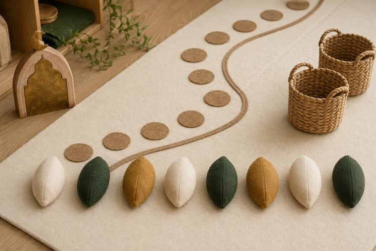
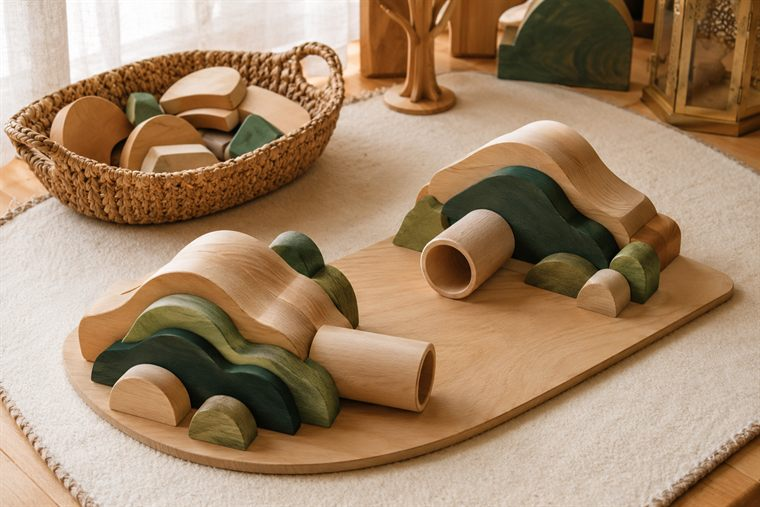
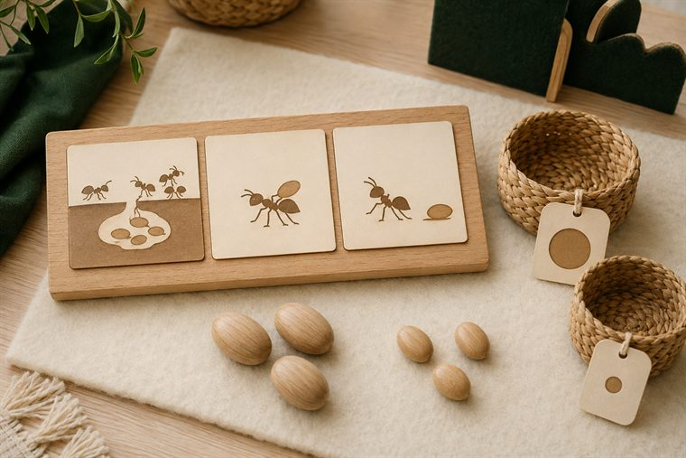
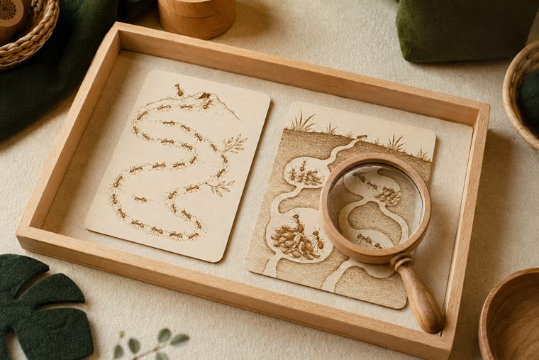

مساحاتُ لعبٍ حرّ بأدواتٍ تعليمية. لكثرة الأعداد نفتح ٤ أركانٍ متوازية بمراكز مختلفة؛ وزّعي المجموعات عليها وتتناوب بينها في الفترتين حتى لا تتكدّس. كل ركنٍ لمسةٌ تطبيقية خفيفة على فكرة اليوم. (أعمار ٥–٦: بناء/تلوين جاهز/قصّ ولصق/ترتيب/اختيار بطاقات/أدوار/حركة — بلا كتابة أو رسمٍ حرّ.)
دروس اليوم المتكاملة: علّمني ربي (التفكّر في النمل) · حرف الميم.

🏠 الإيهام ولعب الأدوار · «صفُّ النمل المتعاون»
لعبٌ حركيّ: يصطفُّ الأطفال «كالنمل» فينقلون «حبوبًا» (كراتٍ/أكياسًا خفيفة) بالتعاون إلى المخزن، ويردّدون «نتعاونُ كما علّم اللهُ النمل».
🧰 الأدوات: كراتٌ/أكياسٌ خفيفة · سِلالُ تخزين · مسارٌ أرضيّ (شريطٌ لاصق) · طوقُ تعاون.
📋 دور المعلمة: تدير التعاونَ في صفٍّ منظّم وتنسبُ النظامَ إلى تعليم الله: «مَن علّم النملَ أن يتعاون؟»؛ تحتفي بالمشاركة والدور.
🌱 المعنى المركزي: علّم اللهُ النملَ التعاون؛ فأتعاونُ مثلها.
📜 قوانين الركن: أبقى في ركني حتى ينتهي الوقت · أحافظ على أدواته · أتشارك وأنتظر دوري · أُعيد الأدوات مرتّبة.

🧱 ساحة البناء · «أبني قريةَ النمل وأنفاقها»
يبني الطفل بالمكعبات تلالًا وأنفاقًا كقريةِ النمل، ويمرّرُ فيها مجسّماتٍ، ويتذكّرُ أنّ نظامَ بيوتِ النمل بأمر الله. (لا تلوين هنا — التلوينُ في ركن فنوني.)
🧰 الأدوات: مكعباتٌ خشبية · أنابيبُ/أنفاقُ لعب · قاعدةُ بناء · مجسّماتٌ بلا ملامح.
📋 دور المعلمة: تُتيح البناءَ الحرّ ثم تربطُ النظامَ بصنع الله: «مَن نظّم بيوتَ النمل؟»؛ تشجّع التعاون.
🌱 المعنى المركزي: بيوتُ النمل منظّمة بأمر الله؛ سبحانه.
📜 قوانين الركن: أبقى في ركني حتى ينتهي الوقت · أحافظ على أدواته · أتشارك وأنتظر دوري · أُعيد الأدوات مرتّبة.

🧩 أدرك وأستمتع · «النملُ يخزّن ويتعاون»
يرتّبُ الطفل بطاقاتِ نقلِ الطعام وتخزينه، ويصنّفُ كبيرًا/صغيرًا، لعبًا بلا كتابة، ويلاحظُ نظامَ النمل وتعاونَه.
🧰 الأدوات: بطاقاتُ تسلسلٍ (نقل → تخزين) وتصنيف · لوحةُ ترتيبٍ مصوّرة · سِلالُ تصنيف.
📋 دور المعلمة: تنمذجُ التسلسلَ مرّةً ثم تترك الطفلَ يستكشف؛ تحاورُه عن التعاون والادّخار؛ تحتفي بالمحاولة.
🌱 المعنى المركزي: في تدبير النمل عبرة؛ فأتفكّرُ وأتعلّم.
📜 قوانين الركن: أبقى في ركني حتى ينتهي الوقت · أحافظ على أدواته · أتشارك وأنتظر دوري · أُعيد الأدوات مرتّبة.

🔎 أكتشف ما حولي · «أراقبُ النمل»
يلاحظُ الطفل بالمكبّر صورَ نملٍ ومساراتِه، ويتابعُ التعاونَ وحملَ الطعام، ويقول: «صغيرٌ في خلقه عظيمٌ في تدبيره». (ملاحظةٌ حسّية بلا كتابة.)
🧰 الأدوات: صورُ نملٍ ومساراتٍ مطبوعة · مكبّراتٌ وعدساتٌ يدوية · بطاقاتُ ملاحظة.
📋 دور المعلمة: توجّه ملاحظةَ التعاون والنظام وتنسبه إلى الله؛ تقودُ التسبيحَ وتحتفي بالدهشة لا بالإجابة الصحيحة.
🌱 المعنى المركزي: صغيرٌ في خلقه عظيمٌ في تدبيره؛ سبحان خالقه.
📜 قوانين الركن: أبقى في ركني حتى ينتهي الوقت · أحافظ على أدواته · أتشارك وأنتظر دوري · أُعيد الأدوات مرتّبة.
تفاصيلُ الأركان الستّة وروتينُها في تبويب «خريطة الأركان» أعلى الصفحة، ولكلِّ لقاءٍ ركنان تطبيقيّان داخل دليله.